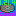

It's a mod that you can listen to the music of new music disc of Minecraft 1.21
If you try to open this website, you will can't enter it. Because it's empty.
这是一个可以听Minecraft 1.21的新音乐唱片的模组。
我把Minecraft 1.21的新音乐唱片移植到1.20了
现在，我们可以在1.20听1.21的唱片了
Have fun!
Music made by Mojang.
Minecraft 1.20.1 · Forge